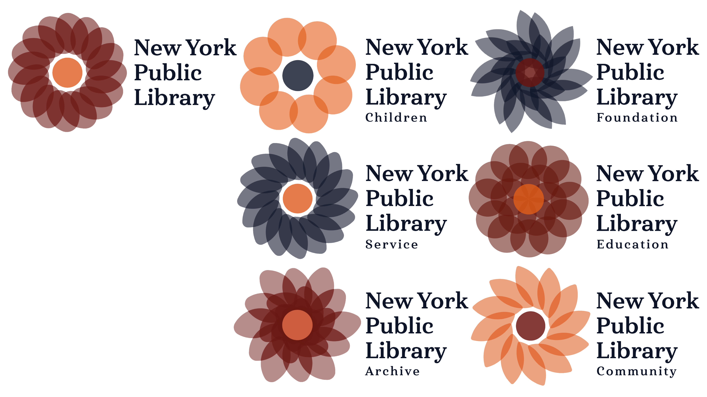

Type: Digital
Project: Generative Identity
Date: November 2023
Description: A logo generator for the New York Public Library created using HTML, CSS, and JavaScript which outputs a series of logos based on architectural features of the library’s original location on 5th Avenue.
The library should be thought of as the hearth of the city. The dark red, bright orange, and dependable navy color palette allows for versatility and evokes a feeling of comfort.
Project: Generative Identity
Date: November 2023
Description: A logo generator for the New York Public Library created using HTML, CSS, and JavaScript which outputs a series of logos based on architectural features of the library’s original location on 5th Avenue.
The library should be thought of as the hearth of the city. The dark red, bright orange, and dependable navy color palette allows for versatility and evokes a feeling of comfort.



The variations in sharpness and color palette allow the user to generate logos for various purposes. Rounder and less complex flowers can be used for children’s programming while a more ornate logo would fit in better at the red carpet events often put on by the NYPL Foundation.